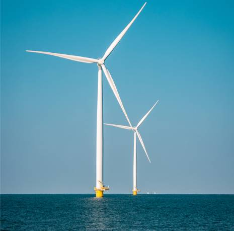

<!DOCTYPE html>
<html lang="en">
  <head>
    <meta charset="UTF-8">
    <meta http-equiv="X-UA-Compatible" content="IE=edge">
    <meta name="viewport" content="width=device-width, initial-scale=1.0">
    <title>Shallow Geo - Site</title>
    <link href="src/fonts/fontawesome-free-5.15.3-web/css/all.min.css" rel="stylesheet">
    <link href="src/css/styles.css" rel="stylesheet">
    <script src="https://code.jquery.com/jquery-3.6.0.min.js" integrity="sha256-/xUj+3OJU5yExlq6GSYGSHk7tPXikynS7ogEvDej/m4=" crossorigin="anonymous"></script>
    <script src="src/js/main.js"></script>
  </head>
  <body></body>
</html>
<header>
  <div class="container flex space-between">
    <section class="logo">
      <h1><a href="/"></a></h1>
    </section>
    <section class="menu">
      <ul>
        <li class="about has-submenu"><a href="#">about</a>
          <ul class="sub-menu">
            <li><a href="/about.html">history</a></li>
            <li><a href="/technology.html">Technology</a></li>
          </ul>
        </li>
        <li class="services"><a href="/services.html">services</a></li>
        <li class="contact"><a href="/contact.html">contact us</a></li>
        <li class="linkedin"><a href="https://www.linkedin.com/company/shallowgeo/" target="_blank"><i class="fab fa-linkedin"></i></a></li>
      </ul>
    </section>
  </div>
</header><span class="before"></span>
<main class="about">
  <section class="top"> 
    <div class="container flex space-between">
      <div>
        <h1>
           History</h1>
        <p>The installation of any submarine infrastructure on the seabed requires a geohazard study, a green light from the geoscientist to the submarine engineer to continue the project. This study is grounded in geological and geotechnical data acquired in situ, and on the interpretation of geophysical data. </p>
      </div>
      <div></div>
    </div>
  </section>
  <section class="map">
    <div class="container"> </div>
  </section>
  <section class="about-text"> 
    <div class="container flex space-between"> 
      <div class="left"> 
        <p>Shallowgeo® masters QA/QC, processing and modeling of acoustic and magnetic data, and since 2018 we have used these skills on several projects in the US East Coast and the Irish Sea, making possible analyses of manmade and geological hazards in cable routes and wind farm arrays. Our efforts are to ensure data quality during geophysical and geotechnical acquisition campaigns while providing support for data acceptance of Governmental Departments such as BOEM (Bureau Ocean Energy Management). We had a decisive participation in seven wind farms in the US East Coast and the Irish Sea:</p>
        <p>With expertise in seismic processing, we design workflows oriented to the removal of artifacts created by strong weather variations in shallow water environments. The challenge of improving image resolution encourages us to develop innovative tools using artificial intelligence.</p>
      </div>
      <div class="right">
        <ul> 
          <li> 
            <p>Bay State Wind </p><span>(OCS-A0500) in Massachusetts: 758km&sup2; - 2000MW</span>
          </li>
          <li> 
            <p>Vineyard Wind </p><span>(OCS-A 0501) in Massachusetts: 675 km² - 800 MW</span>
          </li>
          <li> 
            <p>Ocean Wind</p><span>(OCS-A 0498) in New Jersey: 649 km² – 1100MW </span>
          </li>
          <li> 
            <p>Liberty Wind</p><span>(OCS-A 0522) in Massachusetts: 535 km² - 1200 MW</span>
          </li>
          <li> 
            <p>Empire Wind</p><span>(OCS-A 0512) in New York: 321 km² - 1260 MW</span>
          </li>
          <li> 
            <p>Beacon Wind</p><span>(OCS-A 0520) in Massachusetts: 517 km² - 1230 MW</span>
          </li>
          <li> 
            <p>Erebus Wind Farm</p><span>in Irish Sea: 96MW</span>
          </li>
        </ul>
      </div>
    </div>
  </section>
</main>
<footer>
  <div class="container">
    <h1>Contact</h1>
    <div class="row flex flex-wrap">
      <div class="left">
        <section class="office flex space-between">
          <div class="br"> 
            <div class="contact"> 
              <div class="title">Brazil Office </div>+55 21 3356-5699 <br>
              info@shallowgeo.com
            </div>
          </div>
          <div class="pt">
            <div class="contact"> 
              <div class="title">Portugal Office </div>+351 961 304 470 <br>
              info@shallowgeo.com
            </div>
          </div>
        </section>
      </div>
      <div class="right">
        <section class="f-menu"> 
          <ul> 
            <li> <a href="">about </a></li>
            <li> <a href="">services </a></li>
            <li> <a href="">contact us</a></li>
          </ul>
        </section>
      </div>
      <section class="social flex"><i class="fab fa-linkedin"></i>
        <div>
          <h2>Social networks:</h2><a href="http://linkedin.com/company/shallowgeo"> www.linkedin.com/company/shallowgeo</a>
        </div>
      </section>
    </div>
  </div>
  <section class="copyright"> 
    <div class="container"> 
      <p>© Copyright 2021 Shallow Geo. All rights reserved.</p>
    </div>
  </section>
</footer>